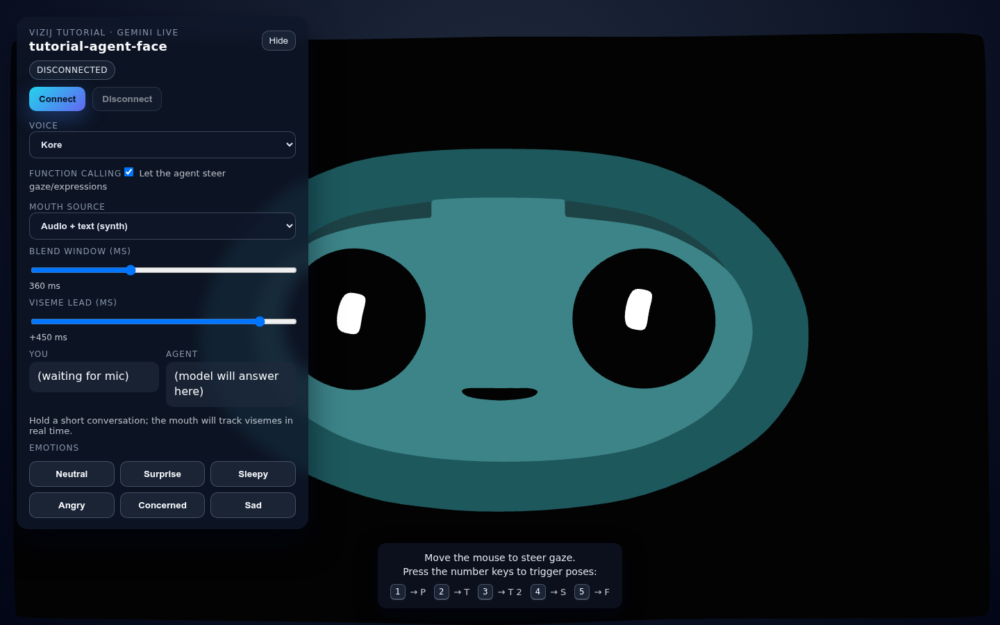
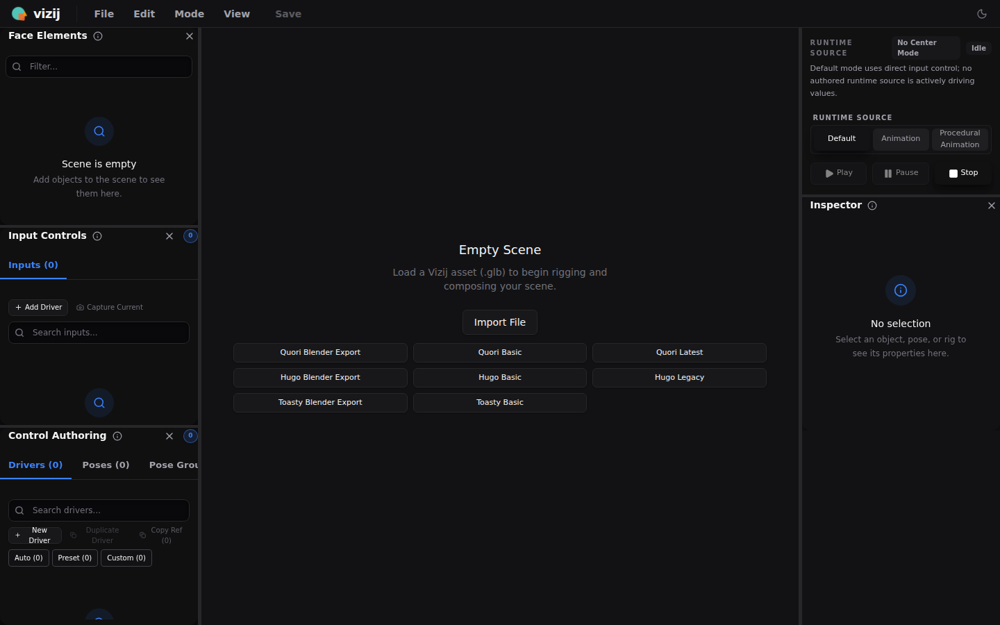
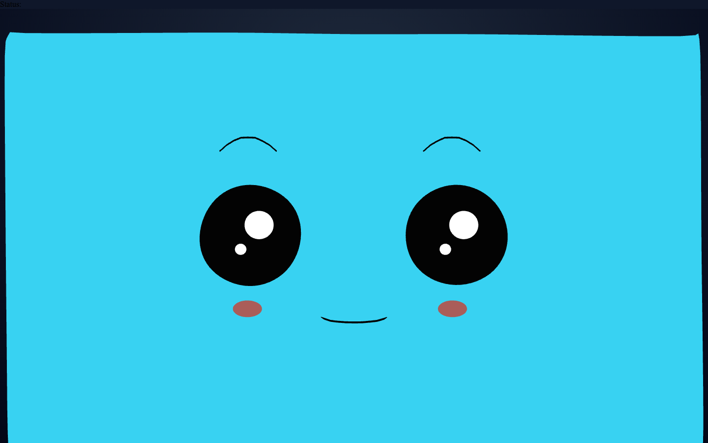
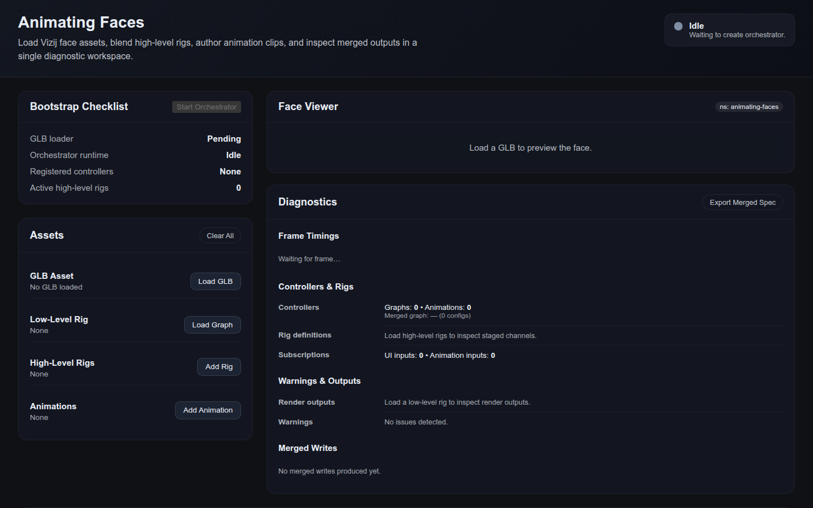

Vizij Afternoon Workshop
Design, Animate, and Deploy Robot Faces with Vizij
A hands-on session built around the current Vizij authoring, runtime, animation, and deployment surfaces.

Capstone teaser: live face runtime with gaze, emotions, and conversation controls.
Outcomes
What Participants Leave Able To Do
- Load and control a Vizij face in a React runtime.
- Inspect the renderer data model and trace control paths.
- Use `vizij-authoring` to reason about rigging and poses.
- Understand stored animation versus live runtime control.
- Explain the path from local demo to robot-facing deployment.
- Contribute grounded roadmap and strategy feedback.
Teaching rhythm
Every block is structured around a visible success check, not a lecture-only explanation.
Agenda
Run of Show
Architecture
How Today’s Apps Fit Together
Authoring
`vizij-authoring`
Import, inspect, organize, and export face assets and rig data.
Runtime
`tutorial-fullscreen-face`
Smallest useful runtime-react face with gaze and pose hotkeys.
Animation
`demo-vizij-player`
Blend rigs, trigger clips, and inspect orchestrator diagnostics.
Conversation
`tutorial-agent-face`
Live visemes, emotion tools, and function-called gaze control.
Deployment
`vizij-standalone`
Desktop runtime with WebSocket control and a built-in control panel.
Strategy
`vizij-docs/ROADMAP`
Translate workshop experience into informed product direction.
Activity 1
Face Design and Control Starts in Authoring

- Load a sample GLB or bundled face.
- Identify standard input routes and visible animatable features.
- Explain the difference between a standard control and a pose weight.
- Use the empty-scene entry points to keep setup fast in the room.
Presenter note: the empty-state sample buttons are useful for workshops because they remove file-picking friction.
Hello Face
Runtime React in the Small

- `VizijAssetBundle` defines the face and metadata.
- `VizijRuntimeProvider` owns loading and orchestration.
- `VizijRuntimeFace` renders the visual surface.
- Mouse gaze and pose hotkeys prove the path wiring quickly.
Workshop checkpoint: participants should be able to point at one path and explain what visible change it causes.
Renderer Data Model
What Changes When You Set a Value
- Inputs are staged into the orchestrator.
- Resolved paths include the face id and namespace.
- Outputs flow into the renderer store and change the face.
rig/{face}/standard/left_eye/pos/x
rig/{face}/standard/right_eye/pos/y
rig/{face}/poses/{pose_name}.weightThese three path shapes are enough to explain most of the workshop’s visible control flows.
Rigging
Standard Inputs Give You Reuse, Pose Weights Give You Expression
- Standard inputs make different faces interoperable.
- Pose groups are the fastest workshop-friendly abstraction.
- Authoring is the place to inspect naming before runtime code.
Suggested teaching move: ask participants which controls should be universal versus face-specific.
Support Window
Keep the Room Moving
Lane 1
Install + env
Recover setup blockers without stopping the main flow.
Lane 2
Path confusion
Use the handouts to reconnect visuals to path patterns.
Lane 3
Stretch tasks
Give fast participants exploration prompts instead of idle time.
Activity 2
Animation and Orchestration

- Use the panel layout to explain assets, controls, and diagnostics.
- Describe how manual rig inputs and stored animation can both contribute.
- Keep this as the backup concept anchor if live conversation is unavailable.
Conversation
Live Control Adds Timing, Audio, and Emotion
- Mouth source modes let you compare baseline, synth, and align strategies.
- Emotion buttons and function-calling show non-verbal behavior hooks.
- This segment depends on `VITE_GEMINI_API_KEY`, so treat it as facilitator-led by default.
Good workshop move: teach the control model even if the room is not fully credentialed.
Deployment
From Laptop Demo to Robot-Facing Runtime
- `vizij-standalone` packages a runtime plus WebSocket control surface.
- The face stays the same; the control layer changes.
- Typed slot values make external control explicit and predictable.
{
"type": "set_slot_values",
"values": {
"rig/robot/standard/left_eye/pos/x": { "f64": 0.5 }
}
}Use the README walkthrough and message format instead of trying to force a full Tauri build for every participant.
Breakouts and Close
Turn the Hands-On Session into a Next-Step Decision
- Product and roadmap priorities
- Research and technical opportunities
- Deployment and adoption risks
- Each group reports one opportunity.
- Each group reports one blocker.
- Each group proposes one next experiment or milestone.
Close with the question: what can you now control, explain, or ship more confidently than you could at 2:30 pm?